The design paradigm of today is often human-centric, but in order to move towards a more sustainable future, we need to adopt more nature-centric design views. Rather than imposing human systems onto the environment, as designers we should study how living systems solve problems of growth, adaptation, resource distribution, and resilience.
When harnessing the innate computational traits of the interaction between plants and mycelium, what biological processes can we extract and recreate to produce a living, self-sufficient architectural system?
What can we learn from these processes and how can we translate these systems into thinking for spatial design? How can designers bring an alternative perspective and contribute to this area of research? What could these living architectural systems look like on a larger scale when implemented into a time-based algorithm? Or alternatively, how can this system exist and survive on its own with no intervention?


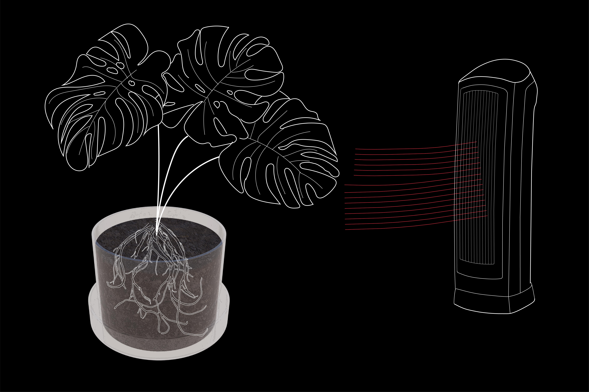
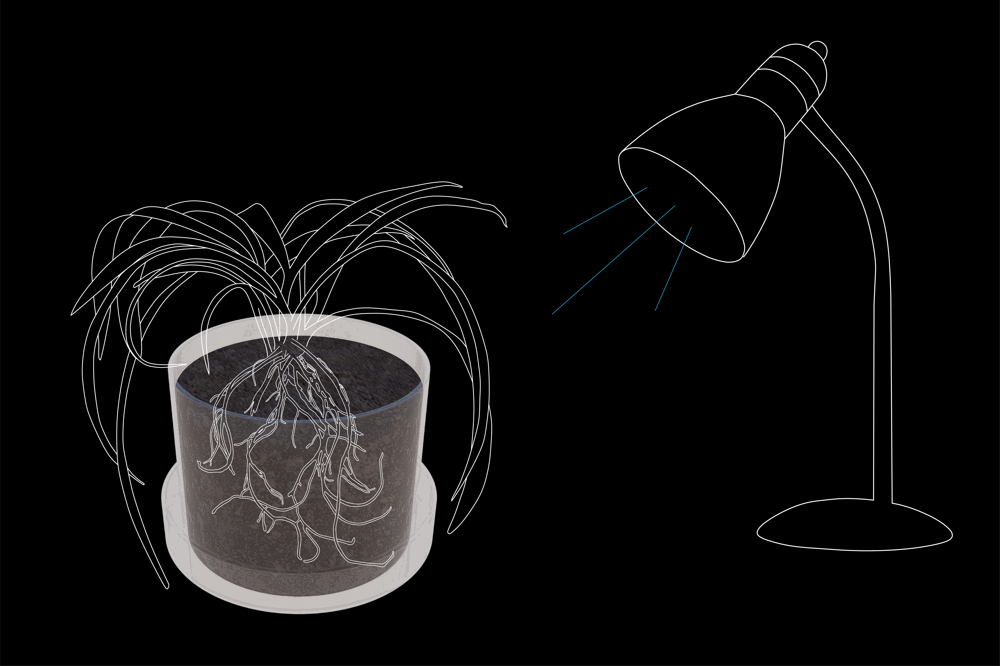

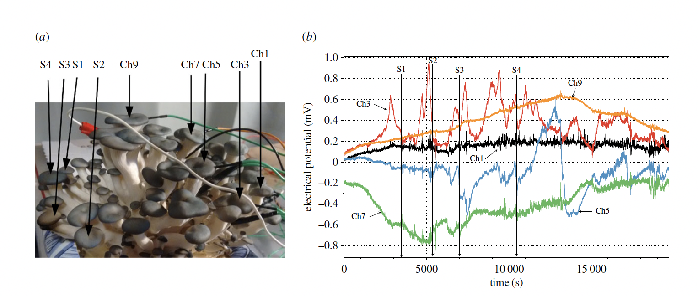

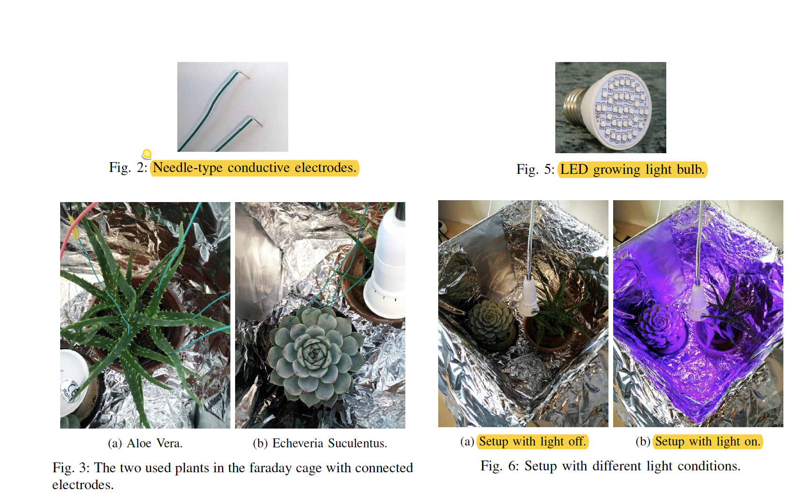
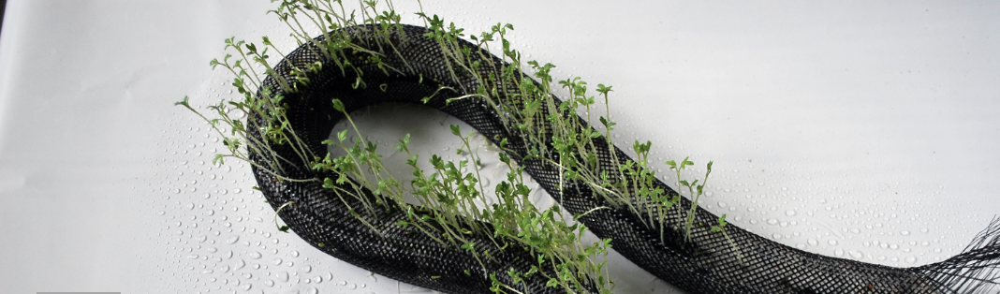

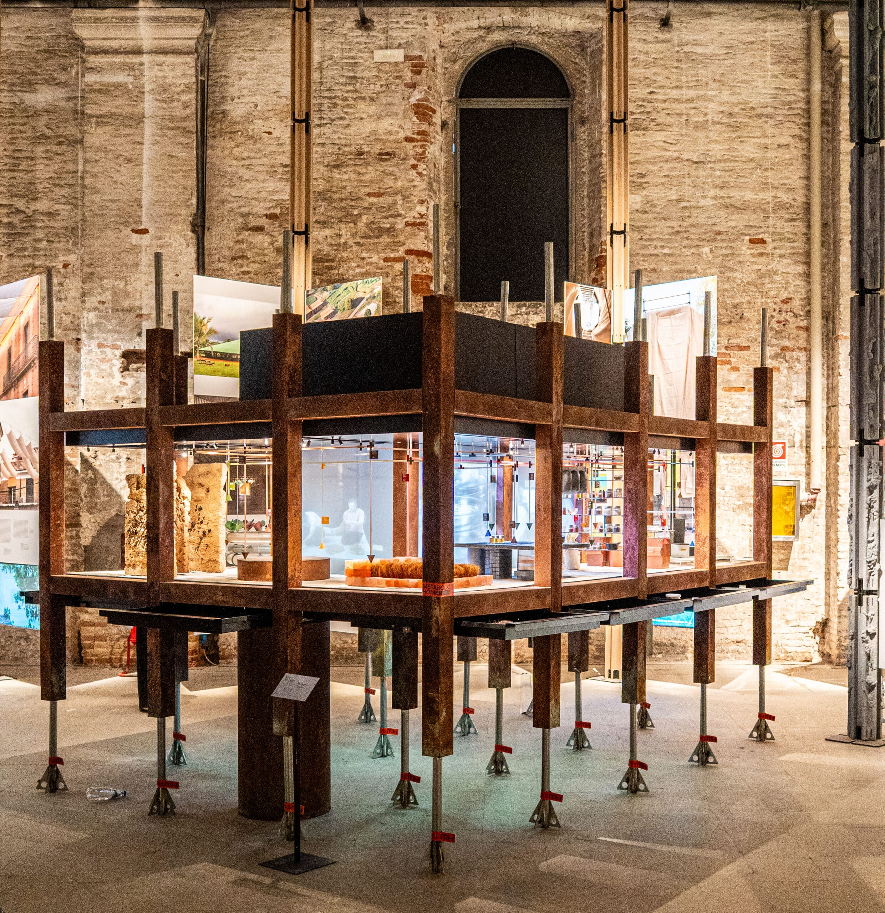
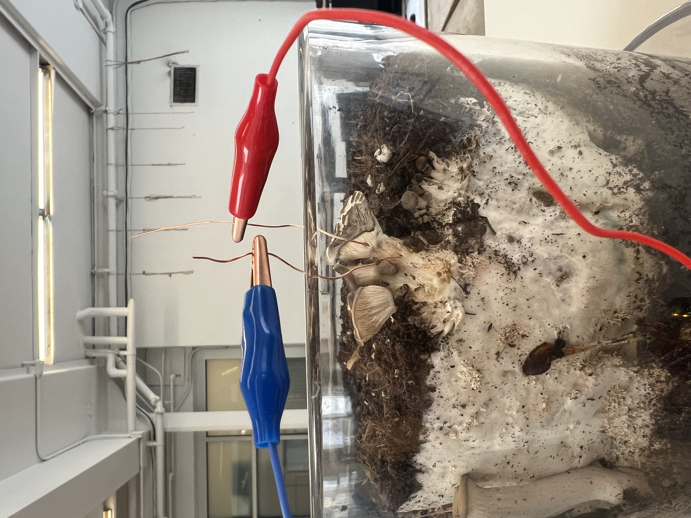
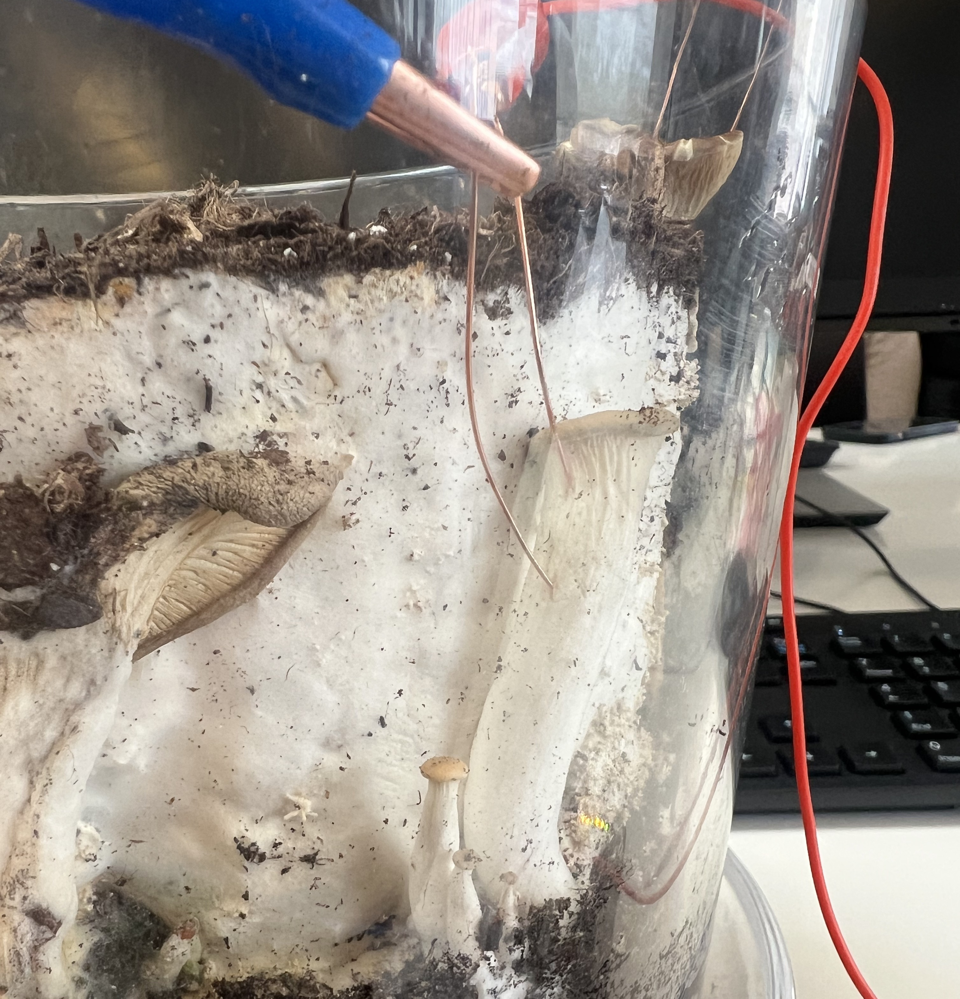
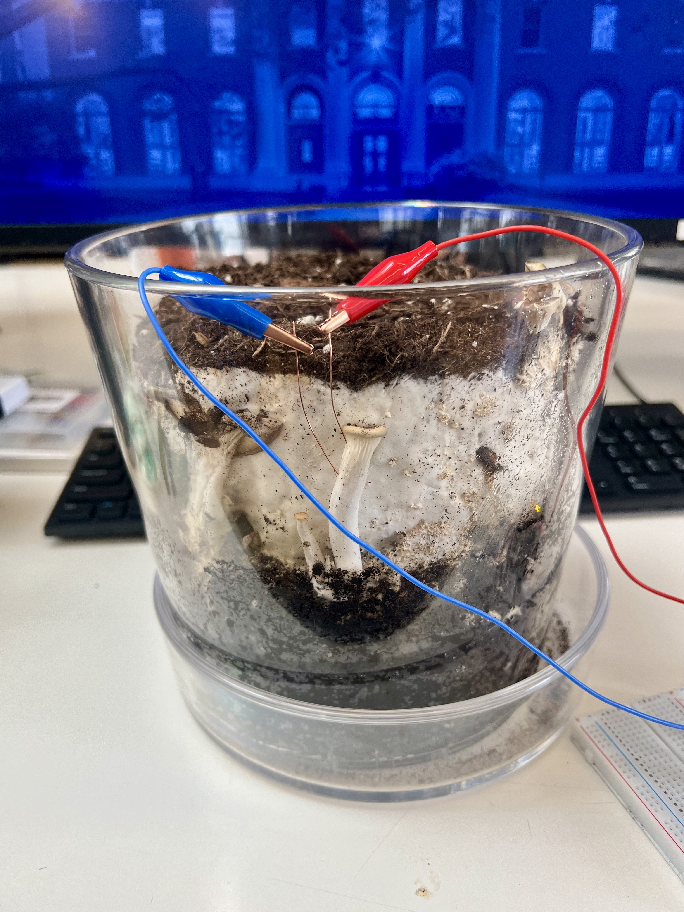
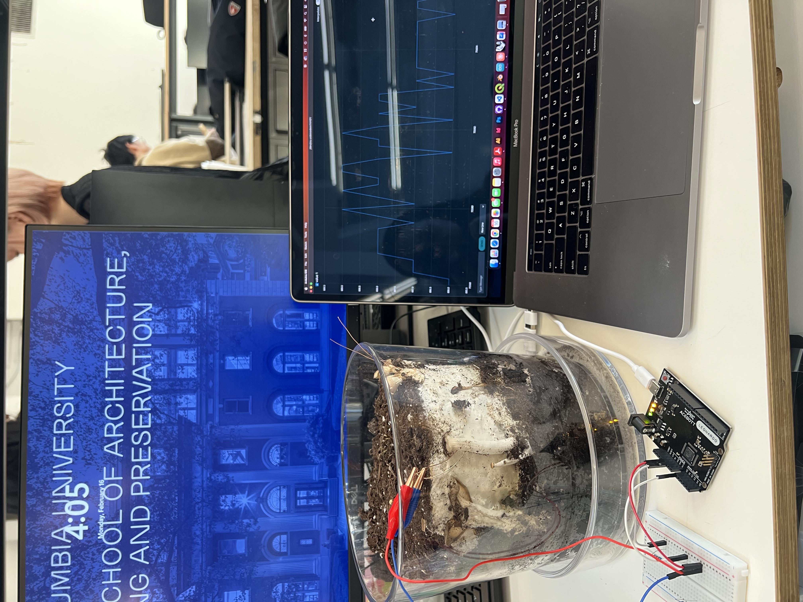
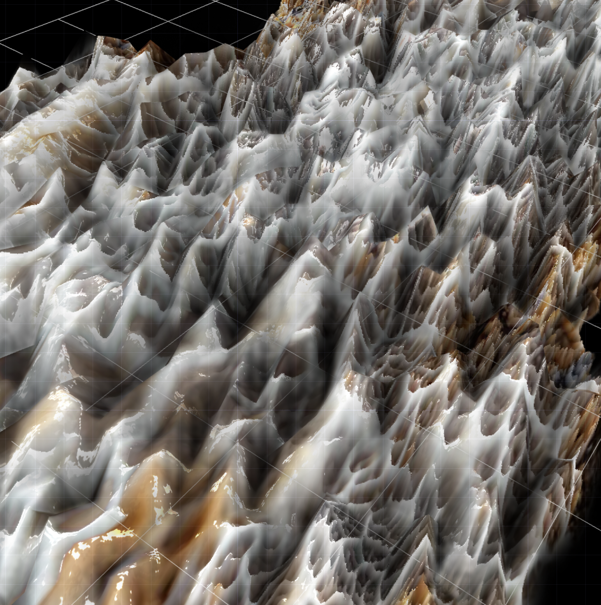
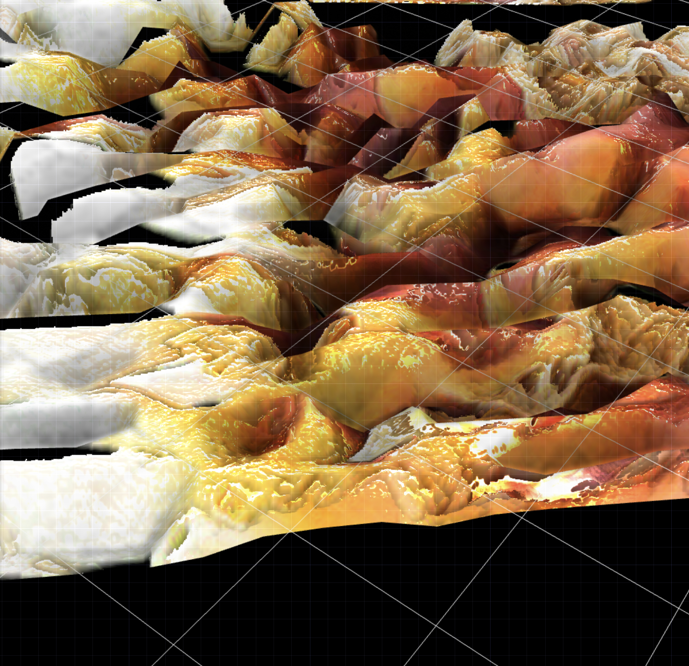